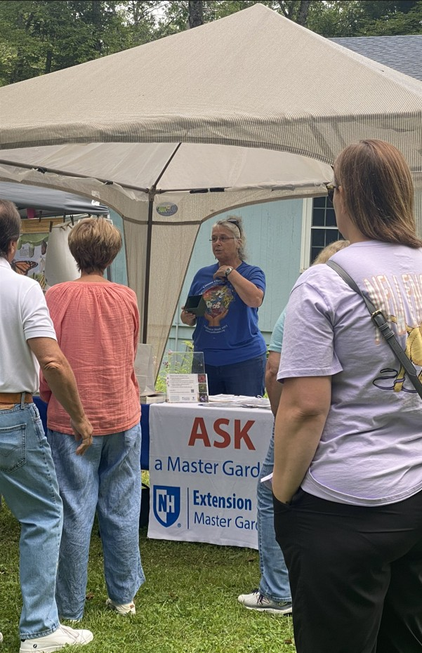

Our Story
Fourteen years of celebrating the monarch butterfly — and the people, plants, and places that make their survival possible. Here’s the story behind our favorite day of the year.
How It All Started
Donna Miller has been a monarch enthusiast since the early 2000s when her son was in second grade and his class studied the butterfly. She was hooked! Donna began learning everything she could. In 2008, she became a citizen scientist for Monarch Watch, tagging monarchs annually before their fall migration.
Four years later, Donna, along with her husband Jim, held the first monarch festival at Petals in the Pines in Canterbury, New Hampshire, to celebrate this amazing creature. This first festival “happened to be when the monarch’s overwintering population was at about its lowest ever,” Donna says. The numbers were so low that year — not just in New Hampshire, but across North America — there were no monarchs at the festival.
That did not dissuade the Millers from continuing the festival tradition. What began as a small gathering of butterfly enthusiasts has now grown into one of the region’s most beloved annual conservation celebrations. Just ten years later in 2022, the Millers saw the biggest crowd ever — over 300 attendees!
That same year, monarch citizen scientist Amira Provost joined the Millers in educating the public with conservation efforts and providing information about citizen science projects, such as the Monarch Larva Monitoring Project (MLMP) through Monarch Joint Venture. Amira provided a hands-on science station with information on community projects, diseases, and tagging. Together, the three enthusiasts provided an incredible experience for attendees.
However, as the event grew over the years, parking at Petals in the Pines became problematic with attendees parking on the side of the road. The Millers were worried someone might get hurt coming to the event. They decided to change the format from a one-day event to smaller-scaled events across several days. The new structure was effective and safer. Sadly, it created more work behind the scenes for the Millers.
After the 12th Annual NH Monarch Festival in 2024, the Millers made the heart-felt decision to pass the management of the festival to Amira. They trusted she would carry on the consersation and education efforts. The following season, the festival returned as a one-day event and was held at the beautiful and historic Canterbury Shaker Village. And, while Petals in the Pines was too small of a venue to hold the beloved festival, it was discovered that Canterbury Shaker Village was a little too large. The hope is that Belmont Village is within the “Goldilocks” zone: not too small, not too big, but just right.

“We’ve also seen the monarchs rebound in the last 10 years, some years better than others. But there is still a long way to go to get their population into a safety zone of an average of 6 hectares for their overwintering area.”— Donna Miller, NH Monarch Festival Co-Founder
Our Mission
The NH Monarch Festival exists to educate, inspire, and mobilize our community around monarch butterfly conservation. We believe that hands-on learning, joyful celebration, and local connection are among the most powerful conservation tools we have.
Every festival activity — from tagging demonstrations to milkweed planting to kids’ crafts — is designed to create a lasting relationship between our community and the natural world. We want every person who visits to leave with knowledge, inspiration, and a concrete next step they can take at home.
Sharing the science of monarch migration, biology, and conservation with visitors of all ages through interactive demonstrations and expert-led presentations.
Encouraging the planting of native milkweed and nectar plants, and supporting efforts to restore monarch habitat across New Hampshire and beyond.
Building a network of monarch advocates — backyard gardeners, teachers, students, artists, and neighbors — united by a shared love of the natural world.
A Fourteen-Year Journey
From its humble beginnings to a beloved regional tradition, every year has brought new growth — in attendance, programming, and community impact.
2012 — Inaugural Event
Donna and Jim Miller hosted the first festival at Petals in the Pines, bringing together a small gathering of monarch enthusiasts. There were no monarchs at the event.
2019 — 7th Annual
A dedicated children’s activity area was introduced, featuring crafts, games, and guided nature walks. Participation in the festival continued to grow.
2022 — 10th Annual
The festival saw a record number of attendees and featured educational booths from NH Audubon, master gardeners, and native plant nurseries.
2023 — 11th Annual
The festival moved from a one-day event to several two-hour events spanning a couple of weekends. The new format addressed safety concerns over parking.
2025 — 13th Annual
The Millers passed on management of the festival to citizen scientist, Amira Provost. Festival was held at Canterbury Shaker Village.
2026 — 14th Annual
The 14th Annual NH Monarch Festival returns on Saturday, August 22nd. This one day event will have new activities, continued traditions, and the same mission: brining the community and monarchs together.
What We Believe
The NH Monarch Festival is guided by a set of values that show up in everything we do — from the vendors we welcome to the activities we create.
Everything we do is in service of monarch butterfly survival. Conservation isn’t a backdrop — it’s the whole point.
The festival is designed to be joyful, accessible, and welcoming to all ages, backgrounds, and levels of nature knowledge.
We celebrate New Hampshire’s natural heritage, feature local vendors and hand-crafters, and strengthen the bonds of our own community.
We believe that joy is one of the most powerful forces for change. We celebrate the monarch — and celebrate each other — with genuine delight.
From toddlers to grandparents, we hope every visitor leaves knowing something they didn’t know before — and feeling the better for it.
Monarchs migrate across a continent. Every milkweed plant, every waystation, every child who learns to love them matters on a global scale.
Behind the Festival
The NH Monarch Festival is organized by a small, dedicated team of volunteers who give their time, creativity, and love of nature every year.
The new driving force behind the NHMF — event coordinator and year-round monarch advocate. Amira has several years of monarch science experience.
Contact UsEvery year, a dedicated group of volunteers, like the Millers and NH Audubon, shows up hours before the event and stays until the last piece of equipment is put away. The festival wouldn’t exist without them. We thank you!
We’re grateful for the support of conservation organizations, native plant nurseries, educators, and local businesses who share our mission and show up every year. This event is a success because of them.
Whether you’re attending for the first time or the fourteenth, we’d love to see you at the festival — and maybe even on our volunteer team.